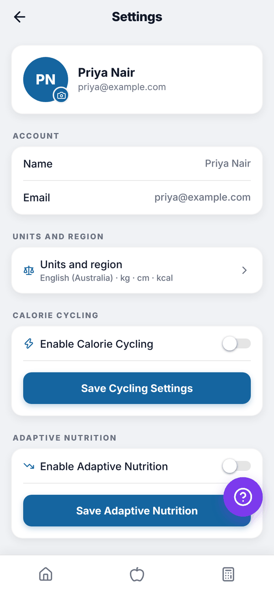
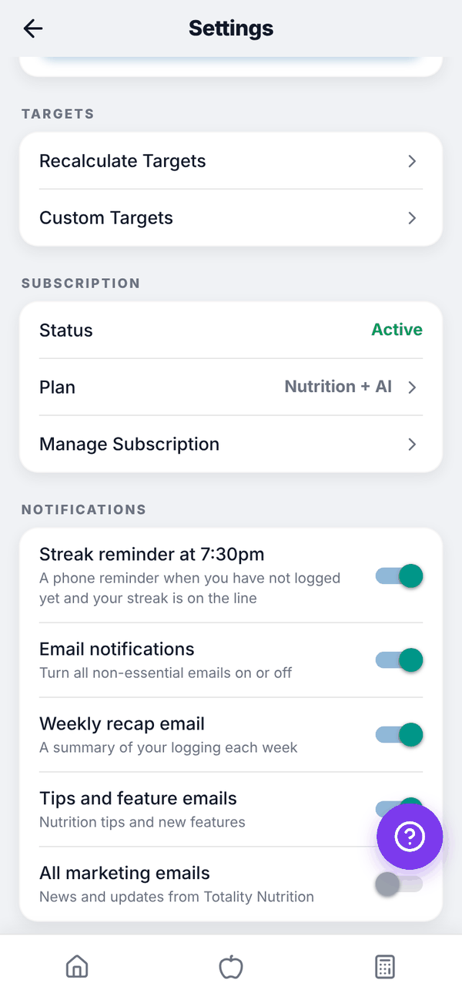
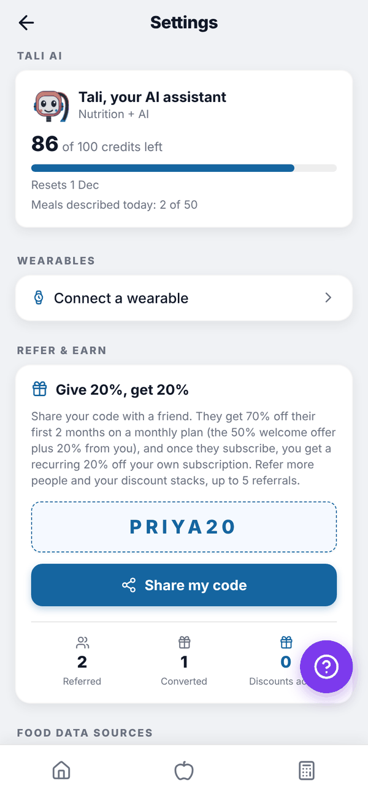
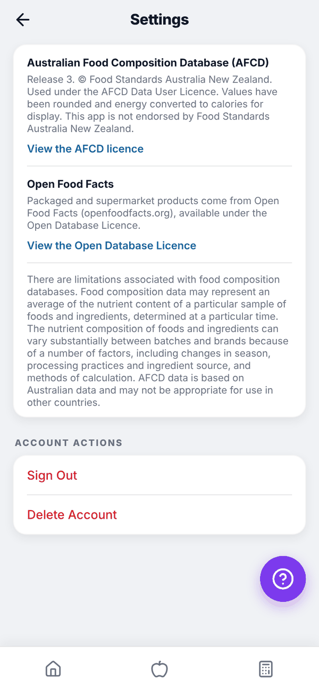

Totality Nutrition guide
Settings
Every section of Settings, from your photo and units to notifications, referrals and deleting your account.
Open Settings with the gear icon at the top of Home. All of Settings is available on Free, Trial and Paid, except Refer & Earn, which isn't in the iPhone app.

Your profile and account#
The top card shows your photo (or initials), name and email. Tap the photo to choose a new one from your phone. ACCOUNT shows your Name and Email.
The sections, top to bottom#
| Section | What it does | Guide |
|---|---|---|
| UNITS AND REGION | Units, country, language, week start, clock | Units and region |
| CALORIE CYCLING | More on training days, less on rest days | Your targets |
| ADAPTIVE NUTRITION | Lowers today's target after an over day | Your targets |
| TARGETS | Recalculate Targets opens the Calculator; Custom Targets lets you type your own | Your targets |
| SUBSCRIPTION | Status (Active, Trial, Free or Payment due), plan, trial days left, Manage Subscription or Choose Nutrition or Nutrition + AI | Subscribe, change, cancel |
| Notifications | Streak reminder and emails | Below |
| TALI AI | Credits and meals described today | Tali AI |
| WEARABLES | Connect a wearable | Apple Health and Health Connect |
| REFER & EARN | Your referral code | Below |
| FOOD DATA SOURCES | Credits and licences for AFCD and Open Food Facts | |
| ACCOUNT ACTIONS | Sign Out and Delete Account | Below |


Notifications#
Each switch saves straight away.
- Streak reminder at 7:30pm. A phone reminder when you haven't logged yet and your streak is on the line.
- Email notifications. Turns all non-essential emails on or off. The three below depend on it.
- Weekly recap email. A summary of your logging each week, sent Monday morning, if you logged that week.
- Tips and feature emails. Nutrition tips and new features, twice a month.
- All marketing emails. News and updates from Totality Nutrition.
Emails about your account and billing, like trial reminders, always send.
Refer & Earn#
Give 20%, get 20%. Tap Get my referral code, then Share my code. A friend who signs up with it gets 70% off their first 2 months on a monthly plan (the 50% welcome offer plus 20% from you). Once they subscribe, you get a recurring 20% off your own subscription, and it stacks with each friend, up to 5 referrals. The card counts Referred, Converted and Discounts active. Refer & Earn is on the web and Android, not in the iPhone app.

Sign out and delete your account#
Sign Out logs you out on that device.
Delete Account permanently deletes your account and all your data. It can't be undone. You'll be asked to confirm. Cancel any subscription first: Manage Subscription for Stripe, or the App Store for Apple. Deleting your account doesn't cancel an Apple subscription.

Questions#
How do I change my name or email?
They're shown in Settings but can't be changed there. Email admintotality@gmail.com.
Will turning off emails stop my trial reminder?
No. Account and billing emails, like the trial reminder, always send.
Does deleting my Nutrition account delete my Totality account?
It's one account for both apps, so yes, it deletes your account and data. If you train with a Totality trainer, talk to them first.